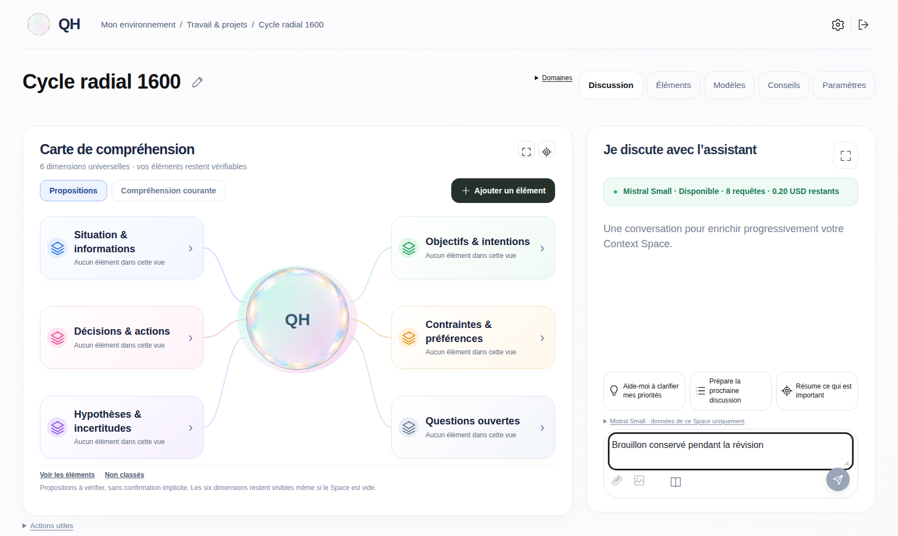
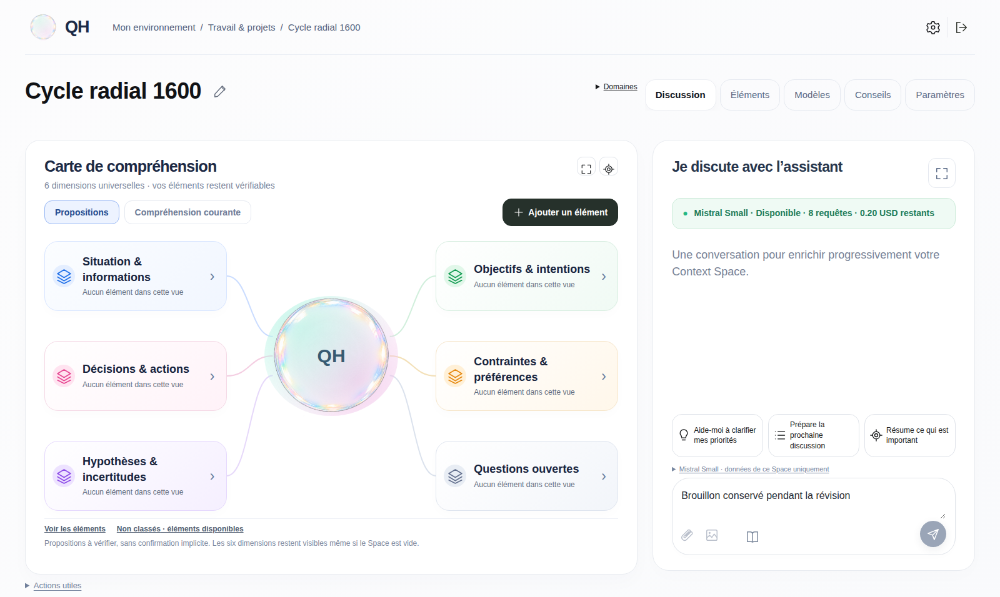

Screenshot Playwright reali a1600×956, dati sintetici isolati. Il primo elemento resta non classificato fino alla review esplicita QH46.


Assegnazione · Conferma corrente · Mobile completo
Budget delle immagini: simulazione isolata. Residuo reale:3 richieste /0,19750265USD. Questa pagina non esegue chiamate.